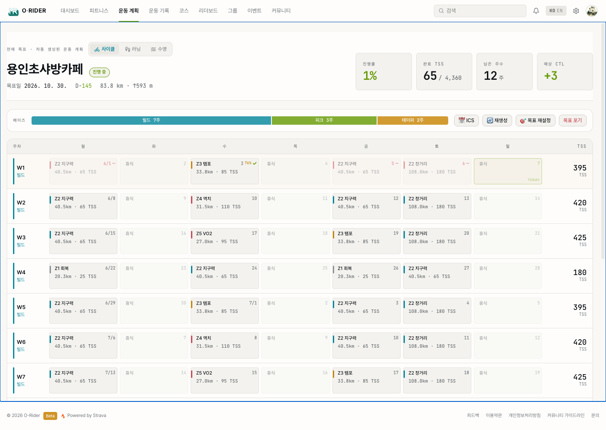
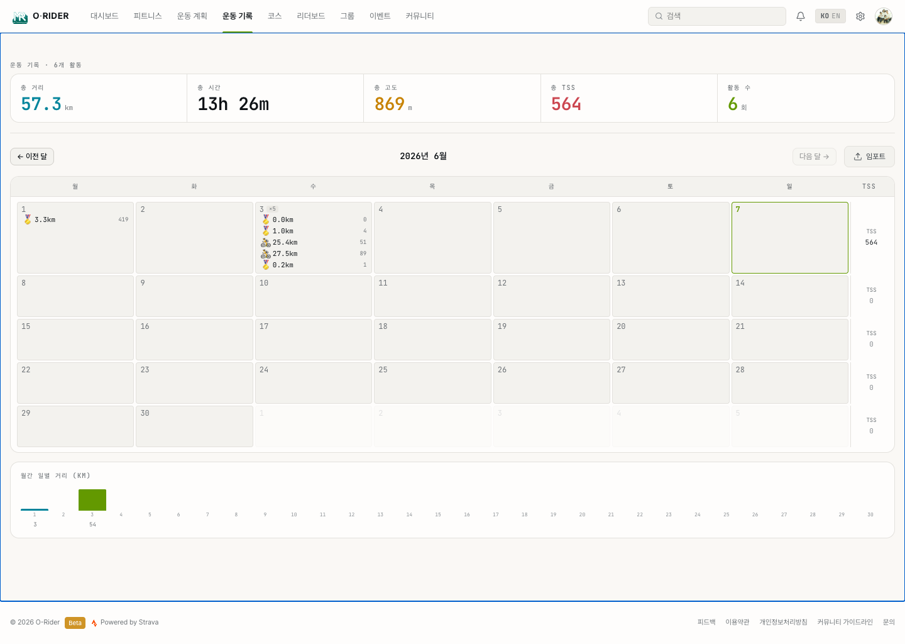

7. 운동 계획과 훈련 기록
이 섹션의 목적
목표 대회나 거리를 정하면 Orider가 남은 기간에 맞춰 주간 운동 계획을 자동으로 만들어 줍니다. 매일의 운동은 실제 라이딩 기록과 피로도에 따라 자동으로 조정되고, 월 캘린더에서 그동안의 훈련을 되짚어 볼 수 있습니다. 이 장은 "목표 설정 → 계획 따라가기 → 기록 확인"의 흐름을 다룹니다.

7.1 운동 목표 설정 — "3단계로 나만의 계획 만들기"
해야 할 것
상단 메뉴에서 운동 계획으로 들어가 목표가 없으면 "목표 설정하기"를 누르거나, 직접 목표 설정 페이지로 이동합니다. 종목 탭(사이클·러닝·수영)을 먼저 고른 뒤, 3단계 위저드를 따라갑니다.
확인할 것
종목마다 1단계가 다릅니다. 사이클은 내가 등록한 코스를 고르고(없으면 GPX 업로드/활동에서 코스 생성), 러닝은 5K·10K·하프·풀·서울마라톤·트레일 24K 중 이벤트를, 수영은 1500m 테스트·오픈워터·트라이애슬론 등 이벤트를 고릅니다.
| 입력 항목 | 설명 |
|---|---|
| 목표 유형 | 완주 / 목표 시간 / 레이스 (수영은 완주 / 목표 시간 / 기술 향상). 유형에 따라 운동 구성이 달라집니다. |
| 목표일 | 대회 날짜. 최소 4주 뒤부터 선택 가능하며, 남은 주수가 자동 계산됩니다. |
| 목표 시간 | 완주 유형이 아니면 입력. 필요 평균 파워(사이클)·페이스(러닝/수영)가 실시간으로 계산됩니다. |
| 주당 운동 횟수 | 사이클·러닝은 1~6회, 수영은 1~5회 중 선택. |
2단계에서는 목표 달성 가능성이 함께 표시됩니다. 내 현재 수준(사이클 FTP, 러닝 임계 페이스 LTHR, 수영 CSS)과 목표를 비교해 여유 있음 · 적정 · 도전적 · 무리 4단계로 판정하고, 현재 피로도(TSB)도 반영합니다.
결과
"계획 시작하기"를 누르면 서버가 남은 주수에 맞춰 빌드업 → 피크 → 테이퍼 구성의 주간 계획을 자동 생성하고, 운동 계획 페이지로 이동합니다.

7.2 운동 계획 — "주간 TSS 계획과 자동 적응"
생성된 계획을 12주 캘린더로 펼쳐 보고, 매일 어떤 운동을 얼마만큼 해야 하는지 확인하는 화면입니다.
확인할 것
상단에 목표 코스명·목표일·D-day·거리·목표 시간이 표시되고, 그 옆에 4개 지표 — 진행률, 완료 TSS / 전체 TSS, 남은 주수, 목표일 예상 CTL — 가 나옵니다. 그 아래 페이즈 막대(빌드 · 피크 · 테이퍼 각 주수)가 보입니다.
달력은 주(週)별 행으로 구성되고, 각 칸에는 그날의 운동 종류·예상 거리/시간·TSS가 들어갑니다. 칸 색상 막대는 강도 존을 뜻합니다.
| 표시 | 의미 |
|---|---|
| 색 막대 (왼쪽) | Z1 회복 · Z2 지구력 · Z3 템포 · Z4 역치 · Z5 VO2 · 시뮬/목표일 (하단 범례 참고) |
| 오늘 칸 | 초록 테두리 + "TODAY" 표시로 강조 |
| ✓ + 달성률 | 완료한 운동. 실제 기록 TSS ÷ 계획 TSS를 %로 표시 (80% 이상은 초록, 미만은 노랑) |
| — (빨간 대시) | 지난 날인데 완료·건너뛰기 표시 없이 지나간 "결근" |
| 취소선 + 흐림 | 건너뛴(skip) 운동 |
| 휴식일 | 흐리게 표시. 우측 끝 열에는 그 주의 합계 TSS |
해야 할 것
칸을 클릭하면 그날의 운동을 완료 표시·건너뛰기·운동 변경·앞뒤 날짜와 교환할 수 있고, 연결된 활동 기록도 바로 열 수 있습니다.
상단 버튼으로 계획 전체를 관리합니다.
| 버튼 | 동작 |
|---|---|
| ICS 내보내기 | 계획을 캘린더 파일(.ics)로 내보내 외부 일정 앱에 등록 |
| 재생성 | 미래 일정을 다시 생성 (완료된 운동은 그대로 유지) |
| 목표 재설정 | 목표 설정 위저드로 이동 |
| 목표 포기 | 현재 목표를 종료 (기록은 유지) |
자동 적응: Orider는 최근 활동 기록을 반영해 계획을 스스로 다듬습니다. 지난 주 부하가 부족하면 다음 주 강도를 낮추고, 초과 수행했으면 올립니다. 조정된 날의 칸에는 "조정" 칩(−10%, +5% 처럼 변동폭 표시)이 붙고, 마우스를 올리면 "지난 주 부하가 부족해 다음 주 강도를 ○○%로 낮췄습니다" 같은 설명이 나옵니다.
결과
매일 무엇을 얼마나 할지 고민할 필요 없이, 계획을 따라가기만 하면 목표일에 맞춰 체력이 오르도록 부하가 자동 배분·조정됩니다. 운동을 건너뛰어도 자동으로 재계산됩니다.
7.3 훈련 기록 — "월 캘린더로 보는 일별 부하"
계획이 "앞으로 할 운동"이라면, 운동 기록은 "지금까지 한 운동"을 월 단위로 되짚어 보는 화면입니다.
확인할 것
상단 메뉴 운동 기록으로 들어가면, 그 달의 활동 수와 함께 5개 월간 요약 — 총 거리, 총 시간, 총 고도, 총 TSS, 활동 수 — 가 표시됩니다. ← 이전 달 / 다음 달 → 버튼으로 달을 넘기고, "이번 달"로 빠르게 돌아올 수 있습니다(다음 달로는 갈 수 없습니다).
월 캘린더의 각 날짜 칸에는 그날의 활동이 종목 아이콘과 함께 들어가고, 거리(수영은 m, 그 외는 km)와 TSS가 표시됩니다. 칸 색은 종목별(사이클 청록 · 러닝 노랑 · 수영 초록)로 구분됩니다.
| 표시 | 의미 |
|---|---|
| 날짜 칸 클릭 | 그날 활동이 하나면 활동 상세로 바로 이동 |
| ×2 같은 배지 | 하루에 활동이 여러 개일 때 개수 표시 (각 줄을 따로 클릭해 이동) |
| 오늘 칸 | 초록 테두리로 강조 |
| 우측 끝 열 | 그 주의 합계 TSS |
캘린더 아래에는 월간 일별 거리 막대 차트가 있어, 그 달에 어느 날 많이/적게 탔는지 한눈에 볼 수 있습니다(거리에 따라 막대 색이 달라집니다).
결과
"이번 달 얼마나 훈련했는가"를 거리·시간·고도·부하로 한눈에 확인하고, 계획(7.2)과 비교해 꾸준함을 점검할 수 있습니다.